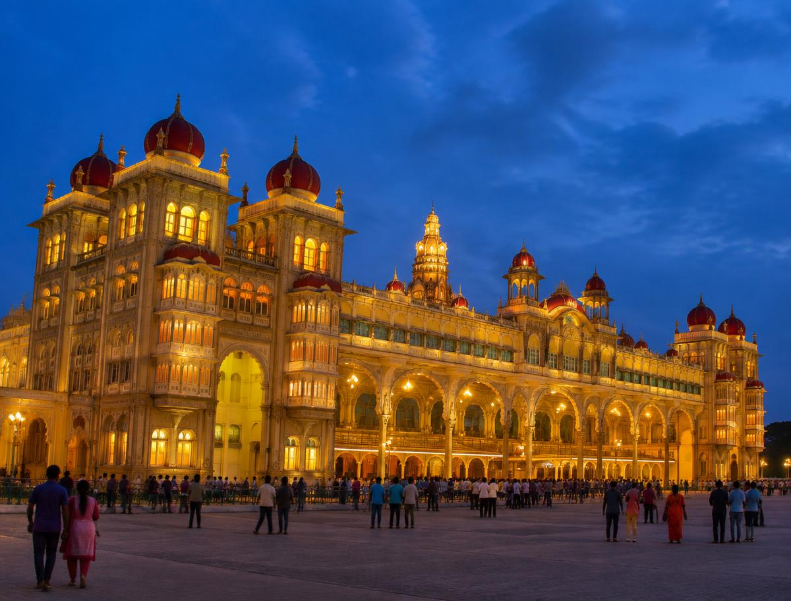
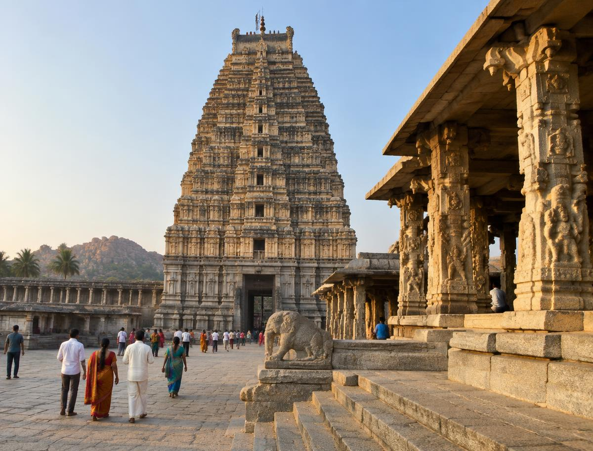
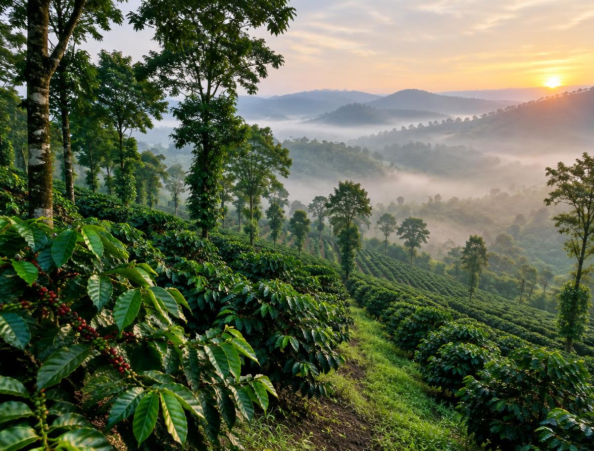
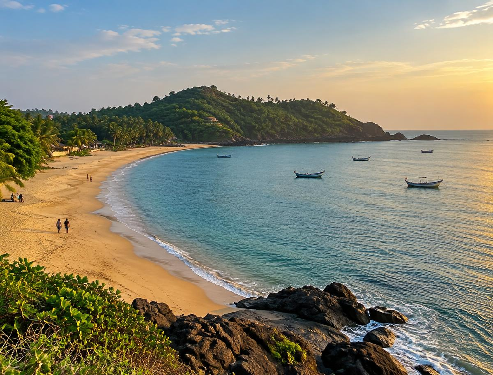

Mysore Palace
A lit-up Indo-Saracenic palace with 974 pillars; the whole building glows on Sundays.

Hampi
A boulder landscape full of temple ruins, stone chariots and bazaars of the Vijayanagara Empire.

Coorg (Kodagu)
Coffee plantations, misty hills, homestays and the source of the River Kaveri at Talakaveri.

Gokarna
A quiet temple town with clean beaches, sea-facing cliffs and a famous trek to Paradise Beach.

Murudeshwar
A towering temple gopuram beside the sea, with a beach, a boat ride to the island and a huge Shiva statue.
Bangalore city
Lalbagh and Cubbon Park, museums, breweries and the best idli windows of the state.
Bandipur & Nagarhole
Tiger, elephant and gaur safaris in forest that links Kerala, Tamil Nadu and Karnataka.
Nandi Hills
A short sunrise drive above a sea of clouds, with Tipu Sultan's summer palace on top.
Ranganathittu
A bird sanctuary island in the Kaveri where marsh crocodiles sunbathe beside the boat.